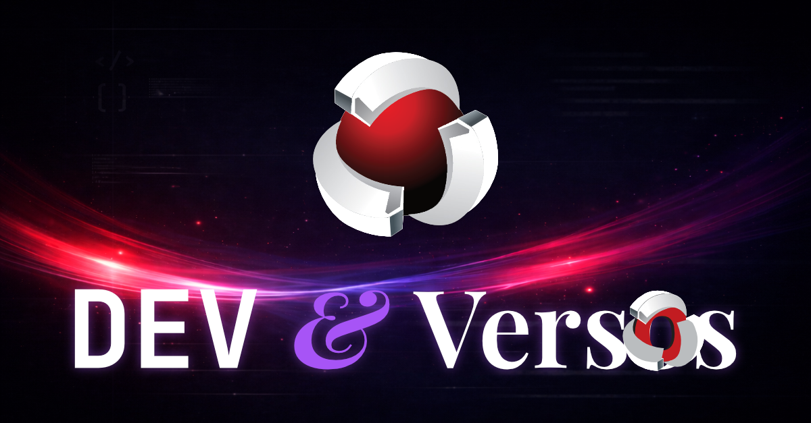
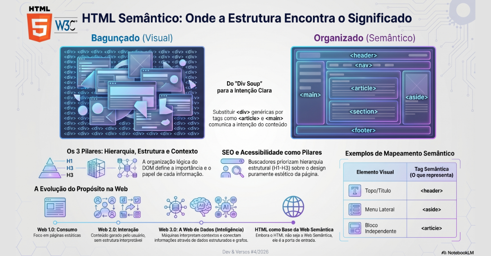

Um espaço para reunir meus artigos, aprendizados, reflexões e conteúdos da newsletter
Dev & Versos, conectando tecnologia, carreira, experiência prática e visão humana.
Artigos • Newsletter • Desenvolvimento • Carreira • Reflexões • Experiências reais
Dev & Versos: conteúdo técnico, humano e autoral sobre desenvolvimento,
carreira, erros, acertos, aprendizados, comunidade e tudo aquilo que faz parte da vida real
de quem constrói tecnologia.
Visão geral
Esta página centraliza meus artigos publicados e a newsletter Dev & Versos,
organizando os conteúdos de forma cronológica, com os textos mais recentes primeiro.
A newsletter Dev & Versos reúne conteúdos sobre tecnologia,
desenvolvimento, prática profissional, reflexões e experiências do dia a dia.

Newsletter
Dev & Versos
Um espaço para compartilhar conteúdos reais sobre desenvolvimento, carreira,
comunidade, aprendizados, erros, acertos e reflexões que fazem parte da jornada
de quem vive tecnologia.
Conteúdos organizados do mais novo para o mais antigo,
com leitura clara, destaque visual e layout em cards.

DEV & Versos #4/2026ArtigoMais recente
🧱 HTML semântico — da bagunça das divs à estrutura inteligente
Um artigo sobre como o HTML semântico organiza melhor a página, melhora acessibilidade,
SEO, manutenção e transforma estruturas soltas em uma base mais clara, estratégica e profissional.
🌐 HTML não é linguagem de programação — e entender isso muda tudo
Um artigo sobre o papel real do HTML dentro da web e por que entender sua função
ajuda a separar quem apenas monta interface de quem realmente entende estrutura,
semântica, acessibilidade e base de construção.
🚀 Front-end não é só interface. É onde o código vira experiência
Um conteúdo sobre como o front-end vai além da aparência visual,
envolvendo interação, percepção, desempenho, usabilidade e a forma
como o usuário realmente vive a aplicação.
🧠 O que ninguém te conta sobre virar um desenvolvedor full stack
Uma visão prática sobre evolução técnica, conexão entre camadas,
amadurecimento profissional e a diferença entre conhecer ferramentas
e realmente entender construção de software.
Mais do que uma sequência de textos, a ideia é construir um espaço contínuo
de troca, aprendizado e expressão.
A Dev & Versos nasceu para reunir tecnologia, vivência profissional,
pensamento crítico, reflexões, boas práticas, erros, acertos e temas que atravessam
o cotidiano de quem trabalha com desenvolvimento.
Aqui entram conteúdos técnicos, humanos e autorais — tanto para quem quer aprender,
quanto para quem quer se reconhecer nas experiências reais por trás do código.
Dev & VersosArtigosTecnologiaCarreiraAprendizadosBoas práticasReflexõesComunidade